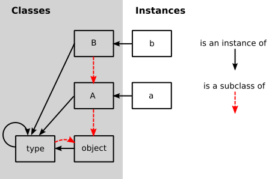

A Simple Object Model
by Carl Friedrich Bolz
Carl Friedrich Bolz is a researcher at King’s College London and is broadly interested in the implementation and optimization of all kinds of dynamic languages. He is one of the core authors of PyPy/RPython and has worked on implementations of Prolog, Racket, Smalltalk, PHP and Ruby. He’s \@cfbolz on Twitter.
Introduction
Object-oriented programming is one of the major programming paradigms in use today, with a lot of languages providing some form of object-orientation. While on the surface the mechanisms that different object-oriented programming languages provide to the programmer are very similar, the details can vary a lot. Commonalities of most languages are the presence of objects and some kind of inheritance mechanism. Classes, however, are a feature that not every language supports directly. For example, in prototype-based languages like Self or JavaScript, the concept of class does not exist and objects instead inherit directly from each other.
Understanding the differences between different object models can be interesting. They often reveal the family resemblance between different languages. It can be useful to put the model of a new language into the context of the models of other languages, both to quickly understand the new model, and to get a better feeling for the programming language design space.
This chapter explores the implementation of a series of very simple object models. It starts out with simple instances and classes, and the ability to call methods on instances. This is the “classical” object-oriented approach that was established in early OO languages such as Simula 67 and Smalltalk. This model is then extended step by step, the next two steps exploring different language design choices, and the last step improving the efficiency of the object model. The final model is not that of a real language, but an idealized, simplified version of Python’s object model.
The object models presented in this chapter will be implemented in Python. The code works on both Python 2.7 and 3.4. To understand the behaviour and the design choices better, the chapter will also present tests for the object model. The tests can be run with either py.test or nose.
The choice of Python as an implementation language is quite unrealistic. A “real” VM is typically implemented in a low-level language like C/C++ and needs a lot of attention to engineering detail to make it efficient. However, the simpler implementation language makes it easier to focus on actual behaviour differences instead of getting bogged down by implementation details.
Method-Based Model
The object model we will start out with is an extremely simplified version of that of Smalltalk. Smalltalk was an object-oriented programming language designed by Alan Kay’s group at Xerox PARC in the 1970s. It popularized object-oriented programming, and is the source of many features found in today’s programming languages. One of the core tenets of Smalltalk’s language design was “everything is an object”. Smalltalk’s most immediate successor in use today is Ruby, which uses a more C-like syntax but retains most of Smalltalk’s object model.
The object model in this section will have classes and instances of them, the ability to read and write attributes into objects, the ability to call methods on objects, and the ability for a class to be a subclass of another class. Right from the beginning, classes will be completely ordinary objects that can themselves have attributes and methods.
A note on terminology: In this chapter I will use the word “instance” to mean -“an object that is not a class”.
A good approach to start with is to write a test to specify what the to-be-implemented behaviour should be. All tests presented in this chapter will consist of two parts. First, a bit of regular Python code defining and using a few classes, and making use of increasingly advanced features of the Python object model. Second, the corresponding test using the object model we will implement in this chapter, instead of normal Python classes.
The mapping between using normal Python classes and using our object model will
be done manually in the tests. For example, instead of writing obj.attribute in
Python, in the object model we would use a method obj.read_attr("attribute").
This mapping would, in a real language implementation, be done
by the interpreter of the language, or a compiler.
A further simplification in this chapter is that we make no sharp distinction between the code that implements the object model and the code that is used to write the methods used in the objects. In a real system, the two would often be implemented in different programming languages.
Let us start with a simple test for reading and writing object fields.
def test_read_write_field():
# Python code
class A(object):
pass
obj = A()
obj.a = 1
assert obj.a == 1
obj.b = 5
assert obj.a == 1
assert obj.b == 5
obj.a = 2
assert obj.a == 2
assert obj.b == 5
# Object model code
A = Class(name="A", base_class=OBJECT, fields={}, metaclass=TYPE)
obj = Instance(A)
obj.write_attr("a", 1)
assert obj.read_attr("a") == 1
obj.write_attr("b", 5)
assert obj.read_attr("a") == 1
assert obj.read_attr("b") == 5
obj.write_attr("a", 2)
assert obj.read_attr("a") == 2
assert obj.read_attr("b") == 5
The test uses three things that we have to implement.
The classes Class and Instance represent classes and
instances of our object model, respectively. There are two
special instances of class: OBJECT and TYPE. OBJECT corresponds to
object in Python and is the ultimate base class of the inheritance
hierarchy. TYPE corresponds to type in Python and is the type of all
classes.
To do anything with instances of Class and Instance, they implement a
shared interface by inheriting from a shared base class Base
that exposes a number of methods:
class Base(object):
""" The base class that all of the object model classes inherit from. """
def __init__(self, cls, fields):
""" Every object has a class. """
self.cls = cls
self._fields = fields
def read_attr(self, fieldname):
""" read field 'fieldname' out of the object """
return self._read_dict(fieldname)
def write_attr(self, fieldname, value):
""" write field 'fieldname' into the object """
self._write_dict(fieldname, value)
def isinstance(self, cls):
""" return True if the object is an instance of class cls """
return self.cls.issubclass(cls)
def callmethod(self, methname, *args):
""" call method 'methname' with arguments 'args' on object """
meth = self.cls._read_from_class(methname)
return meth(self, *args)
def _read_dict(self, fieldname):
""" read an field 'fieldname' out of the object's dict """
return self._fields.get(fieldname, MISSING)
def _write_dict(self, fieldname, value):
""" write a field 'fieldname' into the object's dict """
self._fields[fieldname] = value
MISSING = object()
The Base class implements storing the class of an object, and a dictionary
containing the field values of the object.
Now we need to implement Class and Instance. The constructor of
Instance takes the class to
be instantiated and initializes the fields dict as an empty dictionary.
Otherwise Instance is just a very thin subclass around Base that does
not add any extra functionality.
The constructor of Class takes the name of the class,
the base class, the dictionary of the class and the metaclass.
For classes, the fields are
passed into the constructor by the user of the object model. The class
constructor also takes a base class, which the tests so far don’t need but
which we will make use of in the next section.
class Instance(Base):
"""Instance of a user-defined class. """
def __init__(self, cls):
assert isinstance(cls, Class)
Base.__init__(self, cls, {})
class Class(Base):
""" A User-defined class. """
def __init__(self, name, base_class, fields, metaclass):
Base.__init__(self, metaclass, fields)
self.name = name
self.base_class = base_class
Since classes are also a kind of
object, they (indirectly) inherit from Base. Thus, the class needs to be an instance of
another class: its metaclass.
Now our first test almost passes. The only missing bit is the definition
of the base classes TYPE and OBJECT, which are both instances of
Class. For these we will make a major departure from the Smalltalk model,
which has a fairly complex metaclass system. Instead we will use the model introduced in ObjVlisp1, which
Python adopted.
In the ObjVlisp model, OBJECT and TYPE are intertwined. OBJECT is the base
class of all classes, meaning it has no base class. TYPE is a subclass of
OBJECT.
By default, every class is an instance of TYPE. In particular, both
TYPE and OBJECT are instances of TYPE. However, the programmer can
also subclass TYPE to make a new metaclass:
# set up the base hierarchy as in Python (the ObjVLisp model)
# the ultimate base class is OBJECT
OBJECT = Class(name="object", base_class=None, fields={}, metaclass=None)
# TYPE is a subclass of OBJECT
TYPE = Class(name="type", base_class=OBJECT, fields={}, metaclass=None)
# TYPE is an instance of itself
TYPE.cls = TYPE
# OBJECT is an instance of TYPE
OBJECT.cls = TYPE
To define new metaclasses, it is enough to subclass TYPE. However, in the
rest of this chapter we won’t do that; we’ll simply always use TYPE as the
metaclass of every class.

Now the first test passes. The second test checks that reading and writing attributes works on classes as well. It’s easy to write, and passes immediately.def test_read_write_field_class():
# classes are objects too
# Python code
class A(object):
pass
A.a = 1
assert A.a == 1
A.a = 6
assert A.a == 6
# Object model code
A = Class(name="A", base_class=OBJECT, fields={"a": 1}, metaclass=TYPE)
assert A.read_attr("a") == 1
A.write_attr("a", 5)
assert A.read_attr("a") == 5
isinstance Checking
So far we haven’t taken advantage of the fact that objects have classes. The next
test implements the isinstance machinery:
def test_isinstance():
# Python code
class A(object):
pass
class B(A):
pass
b = B()
assert isinstance(b, B)
assert isinstance(b, A)
assert isinstance(b, object)
assert not isinstance(b, type)
# Object model code
A = Class(name="A", base_class=OBJECT, fields={}, metaclass=TYPE)
B = Class(name="B", base_class=A, fields={}, metaclass=TYPE)
b = Instance(B)
assert b.isinstance(B)
assert b.isinstance(A)
assert b.isinstance(OBJECT)
assert not b.isinstance(TYPE)
To check whether an object obj is an instance of a certain class cls, it
is enough to check whether cls is a superclass of the class of obj, or
the class itself.
To check whether a class is a superclass of another class, the chain of
superclasses of that class is walked. If and only if the other class is found in
that chain, it is a superclass. The chain of superclasses of a class, including the
class itself, is
called the “method resolution order” of that class. It can easily be
computed recursively:
class Class(Base):
...
def method_resolution_order(self):
""" compute the method resolution order of the class """
if self.base_class is None:
return [self]
else:
return [self] + self.base_class.method_resolution_order()
def issubclass(self, cls):
""" is self a subclass of cls? """
return cls in self.method_resolution_order()
With that code, the test passes.
Calling Methods
The remaining missing feature for this first version of the object model is the ability to call methods on objects. In this chapter we will implement a simple single inheritance model.
def test_callmethod_simple():
# Python code
class A(object):
def f(self):
return self.x + 1
obj = A()
obj.x = 1
assert obj.f() == 2
class B(A):
pass
obj = B()
obj.x = 1
assert obj.f() == 2 # works on subclass too
# Object model code
def f_A(self):
return self.read_attr("x") + 1
A = Class(name="A", base_class=OBJECT, fields={"f": f_A}, metaclass=TYPE)
obj = Instance(A)
obj.write_attr("x", 1)
assert obj.callmethod("f") == 2
B = Class(name="B", base_class=A, fields={}, metaclass=TYPE)
obj = Instance(B)
obj.write_attr("x", 2)
assert obj.callmethod("f") == 3
To find the correct implementation of a method that is sent to an object, we walk the method resolution order of the class of the object. The first method found in the dictionary of one of the classes in the method resolution order is called:
class Class(Base):
...
def _read_from_class(self, methname):
for cls in self.method_resolution_order():
if methname in cls._fields:
return cls._fields[methname]
return MISSING
Together with the code for callmethod in the Base implementation, this passes
the test.
To make sure that methods with arguments work as well, and that overriding of methods is implemented correctly, we can use the following slightly more complex test, which already passes:
def test_callmethod_subclassing_and_arguments():
# Python code
class A(object):
def g(self, arg):
return self.x + arg
obj = A()
obj.x = 1
assert obj.g(4) == 5
class B(A):
def g(self, arg):
return self.x + arg * 2
obj = B()
obj.x = 4
assert obj.g(4) == 12
# Object model code
def g_A(self, arg):
return self.read_attr("x") + arg
A = Class(name="A", base_class=OBJECT, fields={"g": g_A}, metaclass=TYPE)
obj = Instance(A)
obj.write_attr("x", 1)
assert obj.callmethod("g", 4) == 5
def g_B(self, arg):
return self.read_attr("x") + arg * 2
B = Class(name="B", base_class=A, fields={"g": g_B}, metaclass=TYPE)
obj = Instance(B)
obj.write_attr("x", 4)
assert obj.callmethod("g", 4) == 12
Attribute-Based Model
Now that the simplest version of our object model is working, we can think of ways to change it. This section will introduce the distinction between a method-based model and an attribute-based model. This is one of the core differences between Smalltalk, Ruby, and JavaScript on the one hand and Python and Lua on the other hand.
The method-based model has the method-calling as the primitive of program execution:
result = obj.f(arg1, arg2)
The attribute-based model splits up method calling into two steps: looking up an attribute and calling the result:
method = obj.f
result = method(arg1, arg2)
This difference can be shown in the following test:
def test_bound_method():
# Python code
class A(object):
def f(self, a):
return self.x + a + 1
obj = A()
obj.x = 2
m = obj.f
assert m(4) == 7
class B(A):
pass
obj = B()
obj.x = 1
m = obj.f
assert m(10) == 12 # works on subclass too
# Object model code
def f_A(self, a):
return self.read_attr("x") + a + 1
A = Class(name="A", base_class=OBJECT, fields={"f": f_A}, metaclass=TYPE)
obj = Instance(A)
obj.write_attr("x", 2)
m = obj.read_attr("f")
assert m(4) == 7
B = Class(name="B", base_class=A, fields={}, metaclass=TYPE)
obj = Instance(B)
obj.write_attr("x", 1)
m = obj.read_attr("f")
assert m(10) == 12
While the setup is the same as the corresponding test for method calls, the way that the methods are called is different. First, the attribute with the name of the method is looked up on the object. The result of that lookup operation is a bound method, an object that encapsulates both the object as well as the function found in the class. Next, that bound method is called with a call operation2.
To implement this behaviour, we need to change the Base.read_attr
implementation. If the attribute is not found in the dictionary, it is looked
for in the class. If it is found in the class, and the attribute is a callable,
it needs to be turned into a bound method. To emulate a bound method we simply
use a closure. In addition to changing Base.read_attr we can also change
Base.callmethod to use the new approach to calling methods to make sure all
the tests still pass.
class Base(object):
...
def read_attr(self, fieldname):
""" read field 'fieldname' out of the object """
result = self._read_dict(fieldname)
if result is not MISSING:
return result
result = self.cls._read_from_class(fieldname)
if _is_bindable(result):
return _make_boundmethod(result, self)
if result is not MISSING:
return result
raise AttributeError(fieldname)
def callmethod(self, methname, *args):
""" call method 'methname' with arguments 'args' on object """
meth = self.read_attr(methname)
return meth(*args)
def _is_bindable(meth):
return callable(meth)
def _make_boundmethod(meth, self):
def bound(*args):
return meth(self, *args)
return bound
The rest of the code does not need to be changed at all.
Meta-Object Protocols
In addition to “normal” methods that are called directly by the program, many
dynamic languages support special methods. These are methods that aren’t meant
to be called directly but will be called by the object system. In Python those
special methods usually have names that start and end with two underscores; e.g.,
__init__. Special methods can be used to override primitive operations and
provide custom behaviour for them instead. Thus, they are hooks that tell the
object model machinery exactly how to do certain things. Python’s object model
has dozens of special methods.
Meta-object protocols were introduced by Smalltalk, but were used even more by the object systems for Common Lisp, such as CLOS. That is also where the name meta-object protocol, for collections of special methods, was coined3.
In this chapter we will add three such meta-hooks to our object model. They are
used to fine-tune what exactly happens when reading and writing attributes. The
special methods we will add first are __getattr__ and __setattr__, which
closely follow the behaviour of Python’s namesakes.
Customizing Reading and Writing and Attribute
The method __getattr__ is called by the object model when the attribute that
is being looked up is not found by normal means; i.e., neither on the
instance nor on the class. It gets the name of the attribute being looked up as
an argument. An equivalent of the __getattr__ special method was part of
early Smalltalk4 systems under the name doesNotUnderstand:.
The case of __setattr__ is a bit different. Since setting an attribute
always creates it, __setattr__ is always called when setting an
attribute. To make sure that a __setattr__ method always exists, the
OBJECT class has a definition of __setattr__. This base implementation
simply does what setting an attribute did so far, which is write the attribute
into the object’s dictionary. This also makes it possible for a user-defined
__setattr__ to delegate to the base OBJECT.__setattr__ in some cases.
A test for these two special methods is the following:
def test_getattr():
# Python code
class A(object):
def __getattr__(self, name):
if name == "fahrenheit":
return self.celsius * 9. / 5. + 32
raise AttributeError(name)
def __setattr__(self, name, value):
if name == "fahrenheit":
self.celsius = (value - 32) * 5. / 9.
else:
# call the base implementation
object.__setattr__(self, name, value)
obj = A()
obj.celsius = 30
assert obj.fahrenheit == 86 # test __getattr__
obj.celsius = 40
assert obj.fahrenheit == 104
obj.fahrenheit = 86 # test __setattr__
assert obj.celsius == 30
assert obj.fahrenheit == 86
# Object model code
def __getattr__(self, name):
if name == "fahrenheit":
return self.read_attr("celsius") * 9. / 5. + 32
raise AttributeError(name)
def __setattr__(self, name, value):
if name == "fahrenheit":
self.write_attr("celsius", (value - 32) * 5. / 9.)
else:
# call the base implementation
OBJECT.read_attr("__setattr__")(self, name, value)
A = Class(name="A", base_class=OBJECT,
fields={"__getattr__": __getattr__, "__setattr__": __setattr__},
metaclass=TYPE)
obj = Instance(A)
obj.write_attr("celsius", 30)
assert obj.read_attr("fahrenheit") == 86 # test __getattr__
obj.write_attr("celsius", 40)
assert obj.read_attr("fahrenheit") == 104
obj.write_attr("fahrenheit", 86) # test __setattr__
assert obj.read_attr("celsius") == 30
assert obj.read_attr("fahrenheit") == 86
To pass these tests, the Base.read_attr and Base.write_attr methods
need to be changed:
class Base(object):
...
def read_attr(self, fieldname):
""" read field 'fieldname' out of the object """
result = self._read_dict(fieldname)
if result is not MISSING:
return result
result = self.cls._read_from_class(fieldname)
if _is_bindable(result):
return _make_boundmethod(result, self)
if result is not MISSING:
return result
meth = self.cls._read_from_class("__getattr__")
if meth is not MISSING:
return meth(self, fieldname)
raise AttributeError(fieldname)
def write_attr(self, fieldname, value):
""" write field 'fieldname' into the object """
meth = self.cls._read_from_class("__setattr__")
return meth(self, fieldname, value)
The procedure for reading an attribute is changed to call the __getattr__ method with the
fieldname as an argument, if the method exists, instead of raising an error. Note
that __getattr__ (and indeed all special methods in Python) is looked up on
the class only, instead of recursively calling
self.read_attr("__getattr__"). That is because the latter would
lead to an infinite recursion of read_attr if __getattr__ were not defined
on the object.
Writing of attributes is fully deferred to the __setattr__ method. To make
this work, OBJECT needs to have a __setattr__ method that calls the
default behaviour, as follows:
def OBJECT__setattr__(self, fieldname, value):
self._write_dict(fieldname, value)
OBJECT = Class("object", None, {"__setattr__": OBJECT__setattr__}, None)
The behaviour of OBJECT__setattr__ is like the previous behaviour of
write_attr. With these modifications, the new test passes.
Descriptor Protocol
The above test to provide automatic conversion between
different temperature
scales worked but was annoying to write, as the attribute name needed
to be checked explicitly in the __getattr__ and __setattr__ methods. To
get around this, the descriptor protocol was introduced in
Python.
While __getattr__ and __setattr__ are called on the object the attribute
is being read from, the descriptor protocol calls a special method on the
result of getting an attribute from an object. It can be seen as the
generalization of binding a method to an object – and indeed, binding a method to
an object is done using the descriptor protocol. In addition to bound methods,
the most important use case for the descriptor protocol in Python is the
implementation of staticmethod, classmethod and property.
In this subsection we will introduce the subset of the descriptor protocol which deals with binding objects. This is done using the special method __get__,
and is best explained with an example test:
def test_get():
# Python code
class FahrenheitGetter(object):
def __get__(self, inst, cls):
return inst.celsius * 9. / 5. + 32
class A(object):
fahrenheit = FahrenheitGetter()
obj = A()
obj.celsius = 30
assert obj.fahrenheit == 86
# Object model code
class FahrenheitGetter(object):
def __get__(self, inst, cls):
return inst.read_attr("celsius") * 9. / 5. + 32
A = Class(name="A", base_class=OBJECT,
fields={"fahrenheit": FahrenheitGetter()},
metaclass=TYPE)
obj = Instance(A)
obj.write_attr("celsius", 30)
assert obj.read_attr("fahrenheit") == 86
The __get__ method is called on the FahrenheitGetter instance after that
has been looked up in the class of obj. The arguments to __get__ are the
instance where the lookup was done5.
Implementing this behaviour is easy. We simply need to change _is_bindable
and _make_boundmethod:
def _is_bindable(meth):
return hasattr(meth, "__get__")
def _make_boundmethod(meth, self):
return meth.__get__(self, None)
This makes the test pass. The previous tests about bound methods also still
pass, as Python’s functions have a __get__ method that returns a bound
method object.
In practice, the descriptor protocol is quite a lot more complex. It also
supports __set__ to override what setting an attribute means on a
per-attribute basis. Also, the current implementation is cutting a few corners. Note
that _make_boundmethod calls the method __get__ on the implementation
level, instead of using meth.read_attr("__get__"). This is necessary since
our object model borrows functions and thus methods from Python, instead of
having a representation for them that uses the object model. A more complete
object model would have to solve this problem.
Instance Optimization
While the first three variants of the object model were concerned with behavioural variation, in this last section we will look at an optimization without any behavioural impact. This optimization is called maps and was pioneered in the VM for the Self programming language6. It is still one of the most important object model optimizations: it’s used in PyPy and all modern JavaScript VMs, such as V8 (where the optimization is called hidden classes).
The optimization starts from the following observation: In the object model as
implemented so far all instances use a full dictionary to store their
attributes. A dictionary is implemented using a hash map, which takes a lot of
memory. In addition, the dictionaries of instances of the same class typically
have the same keys as well. For example, given a class Point, the keys of
all its instances’ dictionaries are likely "x" and "y".
The maps optimization exploits this fact. It effectively splits up the dictionary of every instance into two parts. A part storing the keys (the map) that can be shared between all instances with the same set of attribute names. The instance then only stores a reference to the shared map and the values of the attributes in a list (which is a lot more compact in memory than a dictionary). The map stores a mapping from attribute names to indexes into that list.
A simple test of that behaviour looks like this:
def test_maps():
# white box test inspecting the implementation
Point = Class(name="Point", base_class=OBJECT, fields={}, metaclass=TYPE)
p1 = Instance(Point)
p1.write_attr("x", 1)
p1.write_attr("y", 2)
assert p1.storage == [1, 2]
assert p1.map.attrs == {"x": 0, "y": 1}
p2 = Instance(Point)
p2.write_attr("x", 5)
p2.write_attr("y", 6)
assert p1.map is p2.map
assert p2.storage == [5, 6]
p1.write_attr("x", -1)
p1.write_attr("y", -2)
assert p1.map is p2.map
assert p1.storage == [-1, -2]
p3 = Instance(Point)
p3.write_attr("x", 100)
p3.write_attr("z", -343)
assert p3.map is not p1.map
assert p3.map.attrs == {"x": 0, "z": 1}
Note that this is a different flavour of test than the ones we’ve written
before. All previous tests just tested the behaviour of the classes via the
exposed interfaces. This test instead checks the implementation details of the
Instance class by reading internal attributes and comparing them to
predefined values. Therefore this test can be called a white-box test.
The attrs attribute of the map of p1 describes the layout of the
instance as having two attributes "x" and "y" which are stored at
position 0 and 1 of the storage of p1. Making a second instance p2
and adding to it the same attributes in the same order will make it end up with
the same map. If, on the other hand, a different attribute is added, the map can
of course not be shared.
The Map class looks like this:
class Map(object):
def __init__(self, attrs):
self.attrs = attrs
self.next_maps = {}
def get_index(self, fieldname):
return self.attrs.get(fieldname, -1)
def next_map(self, fieldname):
assert fieldname not in self.attrs
if fieldname in self.next_maps:
return self.next_maps[fieldname]
attrs = self.attrs.copy()
attrs[fieldname] = len(attrs)
result = self.next_maps[fieldname] = Map(attrs)
return result
EMPTY_MAP = Map({})
Maps have two methods, get_index and next_map. The former is used to
find the index of an attribute name in the object’s storage. The latter is used
when a new attribute is added to an object. In that case the object needs to use
a different map, which next_map computes. The method uses the next_maps
dictionary to cache already created maps. That way, objects that have the same
layout also end up using the same Map object.
The Instance implementation that uses maps looks like this:
class Instance(Base):
"""Instance of a user-defined class. """
def __init__(self, cls):
assert isinstance(cls, Class)
Base.__init__(self, cls, None)
self.map = EMPTY_MAP
self.storage = []
def _read_dict(self, fieldname):
index = self.map.get_index(fieldname)
if index == -1:
return MISSING
return self.storage[index]
def _write_dict(self, fieldname, value):
index = self.map.get_index(fieldname)
if index != -1:
self.storage[index] = value
else:
new_map = self.map.next_map(fieldname)
self.storage.append(value)
self.map = new_map
The class now passes None as the fields dictionary to Base, as Instance
will store the content of the dictionary in another way. Therefore it needs
to override the _read_dict and _write_dict methods. In a real
implementation, we would refactor the Base class so that it is no longer responsible for
storing the fields dictionary, but for now having instances
store None there is good enough.
A newly created instance starts out using the EMPTY_MAP, which
has no attributes, and empty storage. To implement _read_dict, the
instance’s map is asked for the index of the attribute name. Then the
corresponding entry of the storage list is returned.
Writing into the fields dictionary has two cases. On the one hand the value of
an existing attribute can be changed. This is done by simply changing the
storage at the corresponding index. On the other hand, if the attribute does
not exist yet, a map transition (Figure: Map transitions) is
needed using the next_map method. The value of the new attribute is
appended to the storage list.
What does this optimization achieve? It optimizes use of memory in the common case where there are many instances with the same layout. It is not a universal optimization: code that creates instances with wildly different sets of attributes will have a larger memory footprint than if we just use dictionaries.
This is a common problem when optimizing dynamic languages. It is often not possible to find optimizations that are faster or use less memory in all cases. In practice, the optimizations chosen apply to how the language is typically used, while potentially making behaviour worse for programs that use extremely dynamic features.
Another interesting aspect of maps is that, while here they only optimize for memory use, in actual VMs that use a just-in-time (JIT) compiler they also improve the performance of the program. To achieve that, the JIT uses the maps to compile attribute lookups to a lookup in the objects’ storage at a fixed offset, getting rid of all dictionary lookups completely7.
Potential Extensions
It is easy to extend our object model and experiment with various language design choices. Here are some possibilities:
-
The easiest thing to do is to add further special methods. Some easy and interesting ones to add are
__init__,__getattribute__,__set__. -
The model can be very easily extended to support multiple inheritance. To do this, every class would get a list of base classes. Then the
Class.method_resolution_ordermethod would need to be changed to support looking up methods. A simple method resolution order could be computed using a depth-first search with removal of duplicates. A more complicated but better one is the C3 algorithm, which adds better handling in the base of diamond-shaped multiple inheritance hierarchies and rejects insensible inheritance patterns. -
A more radical change is to switch to a prototype model, which involves the removal of the distinction between classes and instances.
Conclusions
Some of the core aspects of the design of an object-oriented programming language are the details of its object model. Writing small object model prototypes is an easy and fun way to understand the inner workings of existing languages better and to get insights into the design space of object-oriented languages. Playing with object models is a good way to experiment with different language design ideas without having to worry about the more boring parts of language implementation, such as parsing and executing code.
Such object models can also be useful in practice, not just as vehicles for experimentation. They can be embedded in and used from other languages. Examples of this approach are common: the GObject object model, written in C, that’s used in GLib and other Gnome libraries; or the various class system implementations in JavaScript.
-
P. Cointe, “Metaclasses are first class: The ObjVlisp Model,” SIGPLAN Not, vol. 22, no. 12, pp. 156–162, 1987. ↩
-
It seems that the attribute-based model is conceptually more complex, because it needs both method lookup and call. In practice, calling something is defined by looking up and calling a special attribute
__call__, so conceptual simplicity is regained. This won’t be implemented in this chapter, however.) ↩ -
G. Kiczales, J. des Rivieres, and D. G. Bobrow, The Art of the Metaobject Protocol. Cambridge, Mass: The MIT Press, 1991. ↩
-
A. Goldberg, Smalltalk-80: The Language and its Implementation. Addison-Wesley, 1983, page 61. ↩
-
In Python the second argument is the class where the attribute was found, though we will ignore that here. ↩
-
C. Chambers, D. Ungar, and E. Lee, “An efficient implementation of SELF, a dynamically-typed object-oriented language based on prototypes,” in OOPSLA, 1989, vol. 24. ↩
-
How that works is beyond the scope of this chapter. I tried to give a reasonably readable account of it in a paper I wrote a few years ago. It uses an object model that is basically a variant of the one in this chapter: C. F. Bolz, A. Cuni, M. Fijałkowski, M. Leuschel, S. Pedroni, and A. Rigo, “Runtime feedback in a meta-tracing JIT for efficient dynamic languages,” in Proceedings of the 6th Workshop on Implementation, Compilation, Optimization of Object-Oriented Languages, Programs and Systems, New York, NY, USA, 2011, pp. 9:1–9:8. ↩